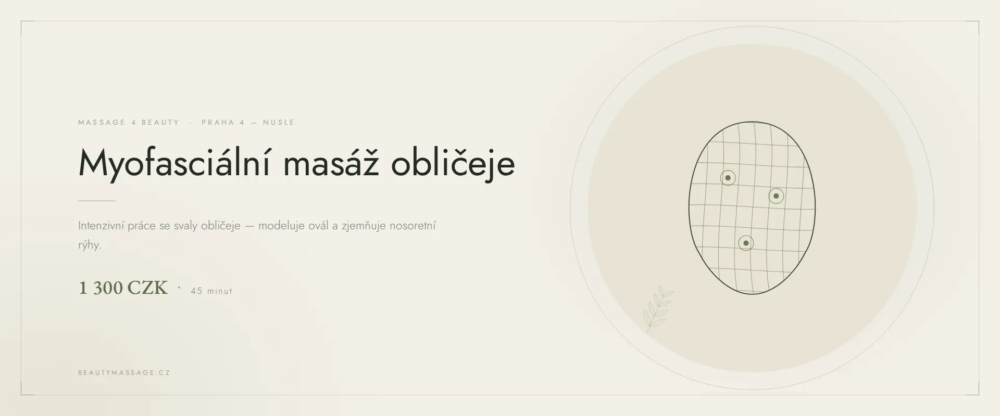

Массаж лица · Прага 4
Миофасциальный массаж лица в Праге
Глубокая работа с фасциями — соединительными оболочками мышц, которые держат лицо в стянутом состоянии. Самая действенная техника, если нужно укрепить овал и растворить многолетнее напряжение.
Что такое миофасциальный массаж лица
Фасция — это тонкая соединительная оболочка, которая обволакивает каждую мышцу тела, включая лицо. Когда она стягивается от стресса, неправильного положения головы или сжатой челюсти, она начинает тянуть мышцы и кожу вниз. Ни один крем не достаёт до этого слоя, потому что он лежит глубоко под кожей.
Миофасциальный массаж лица работает именно там. Медленное, глубокое и удерживаемое давление позволяет фасции постепенно расслабиться и вернуться к исходной длине. Черты выпрямляются, овал укрепляется, а мимические морщины разглаживаются изнутри — не заполнением, а расслаблением.
Как проходит процедура
- Оценка напряжения Прощупываю, где фасции стянуты сильнее всего — чаще всего челюсть, виски и лоб.
- Расслабление шеи и затылка Фасция лица связана с шейной. Без работы с шеей результат не удержится.
- Глубокая фасциальная работа Медленное удерживаемое давление, пока ткань сама не отпустит. Спешки нет.
- Выравнивание и отдых Завершающие движения выравнивают ткань и успокаивают кожу. Лёгкое покраснение проходит за час.
Эффект миофасциального массажа
- заметное укрепление овала лица
- разглаживание морщин между бровями и на лбу
- расслабление сжатой челюсти и облегчение при бруксизме
- выравнивание асимметрии от одностороннего напряжения
- улучшение положения головы и расслабление шеи
- более стойкий результат, чем у поверхностных массажей
Кому подходит
Миофасциальный массаж лица идеален, если вы сжимаете зубы, страдаете от боли в челюстном суставе, подолгу сидите за компьютером или замечаете, что овал лица поплыл. Подходит и тем, кому классического массажа лица уже недостаточно и хочется более глубокой работы.
Когда массаж не проводится
- острое воспаление или травма лица
- недавно введённые филлеры или ботокс (подождите 2–3 недели)
- острые проблемы челюстного сустава в лечении
- высокая температура и острые заболевания
- онкологическое заболевание в активном лечении
Сомневаетесь? Позвоните мне до записи по номеру +420 721 761 411, и мы всё обсудим.
Цена миофасциального массажа лица
Частые вопросы
Больно ли делать миофасциальный массаж лица?
Давление глубже, чем при классическом массаже, и в местах наибольшего напряжения может быть ненадолго неприятно. Но мы никогда не переходим границу, которую вы готовы вытерпеть — достаточно сказать.
Чем он отличается от классического массажа лица?
Классический массаж работает с кожей и поверхностными мышцами и сильно улучшает кровоток. Миофасциальный идёт глубже, в соединительные оболочки мышц, поэтому результат держится дольше.
Сколько нужно сеансов?
Первые изменения почувствуете сразу, но фасция перестраивается медленно. Рекомендую курс из 6–8 еженедельных сеансов, затем поддерживающий массаж раз в месяц.
Может ли кожа покраснеть после массажа?
Да, лёгкое покраснение — это нормально и говорит о притоке крови. Обычно проходит в течение часа.
Помогает ли массаж при бруксизме?
Расслабление жевательных мышц и фасций вокруг челюсти обычно приносит большое облегчение. Но массаж не устраняет причину — сочетайте его с наблюдением у стоматолога.
Запишитесь на миофасциальный массаж
Студия находится в Праге 4 — Нусле, недалеко от Панкраца и Вышеграда. Запись онлайн займёт минуту.